항공산업기사 (2003-03-16 기출문제)
1과목: 항공역학
1. 임계 레이놀즈 수에 대한 설명 내용으로 가장 관계가 먼 것은?
- 층류에서 난류로 바뀔 때의 레이놀즈 수
- 층류에서 또다른 형태의 층류로 바뀔때의 레이놀즈수
- 난류에서 층류로 바뀔 때의 레이놀즈 수
- 유동중 천이현상이 일어날 때의 레이놀즈 수
(정답률: 39%)
2. 항공기의 중량이 일정한 경우에 항공기의 추력과 양항비(lift-drag ratio)와는 어떠한 관계가 있는가?
- 추력은 양항비에 비례한다.
- 추력은 양항비에 반비례한다.
- 추력은 양항비의 제곱에 비례한다.
- 추력은 양항비의 제곱에 반비례한다.
(정답률: 69%)

3. 비행기가 선회비행을 할 때 정상선회라 하는 것은 어떤 경우인가?
- 원심력이 구심력 보다 큰 경우이다.
- 원심력이 구심력과 같은 경우이다.
- 원심력이 구심력 보다 작은 경우이다.
- 속도가 원심력보다 큰 경우이다.
(정답률: 82%)
4. 일반적으로 초음속 영역을 나타낸 것은?
- M ＜ 0.75
- 0.75 ＜ M ＜ 1.20
- 1.20 ＜ M ＜ 5.0
- M ＞ 5.0
(정답률: 72%)
5. 실용상승 한도에서 항공기의 상승률은 얼마인가?
- 0.5m/sec되는 고도
- 10m/sec되는 고도
- 5m/sec되는 고도
- 50m/sec되는 고도
(정답률: 80%)
6. 비행기의 중량 W =4500kg, 주날개면적 S = 50m2, 비행기 고도가 해면일 때 비행기의 최소속도 Vmin을 구하면은? (단, 이 때 비행기의 CLmax =1.6,ρ =0.125kg.sec2/m4 이다)
- 30 m/sec
- 40 km/h
- 100 m/sec
- 120 km/h
(정답률: 63%)
7. 헬리콥터가 빠르게 날 수 없는 이유를 설명한 내용중 틀린 것은?
- 후퇴하는 깃 (retreating blade)에서의 실속
- 후퇴하는 깃 (retreating blade)에서의 역풍지역(reverse flow region)
- 전진하는 깃 끝의 항력감소
- 전진하는 깃 끝의 속도증가
(정답률: 58%)
8. 헬리콥터 회전날개(Rotor Blade)에 적용되는 기본 힌지(Hinge)로 가장 올바른 것은?
- 플래핑힌지(Plapping),페더링힌지(Feathering),전단힌지(Shear)
- 플래핑힌지, 페더링힌지, 항력힌지(Lead-Lag)
- 페더링힌지, 항력힌지, 전단힌지
- 플래핑힌지, 항력힌지, 경사(Slope)힌지
(정답률: 77%)
9. 프로펠러의 효율이 80%인 항공기가 그 기관의 최대출력이 800마력인 경우 이 비행기가 수평 최대속도에서 낼 수 있는 최대 이용마력은?
- 640㎰
- 760㎰
- 800㎰
- 880㎰
(정답률: 74%)
10. 글라이더(Glider)가 고도 2000m 상공에서 양항비 20인 상태로 활공한다면 도달할 수 있는 수평활공거리(m)는?
- 40,000
- 3,000
- 2,000
- 6,000
(정답률: 89%)
11. Airfoil의 머물음점(stagnation point)이란 어떠한 점을 의미 하는가?
- 속도가 0 이 되는 점을 말한다.
- 압력이 0 이 되는 점을 말한다.
- 속도, 압력이 동시에 0 이 되는 점을 말한다.
- 마하수가 1 이 되는 점을 말한다.
(정답률: 45%)
12. 그림과 같이 상대적으로 갑작스런 실속이 일어나는 특성을 갖는 날개골은?
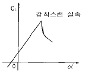
- 두께가 두꺼운 날개골
- 앞전 반지름이 큰 날개골
- 캠버가 큰 날개골
- 레이놀즈수가 작은 날개골
(정답률: 65%)
13. 압력중심에 가장 큰 영향을 끼치는 요소는 어느 것인가?
- 양력
- 받음각
- 항력
- 추력
(정답률: 80%)
14. 항공기 피칭 모멘트(Pitching Moment)가 서서히 증가하는 경향이 있다. 이 같은 현상은?
- 세로안정성(Langitudinal stability)의 감소
- 가로안정성(Lateral stability)의 증대
- 가로안정성의 감소
- 세로안정성의 증대
(정답률: 54%)
15. 항공기의 상승비행에 대한 설명으로 가장 올바른 것은?
- 이용마력과 필요마력이 같다.
- 이용마력이 필요마력보다 크다.
- 이용마력이 필요마력보다 적다.
- 이용마력과 관계없이 필요마력에 의해 결정된다.
(정답률: 75%)
16. 프로펠러 깃의 날개 단면에 대해 유입되는 합성속도 Vt의 크기를 올바르게 표현한 식은? (단, V : 비행속도, r : 프로펠러 반지름, n : 프로펠러 회전수(rps))
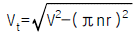
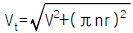
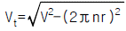
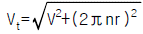
(정답률: 54%)
17. 고정피치 프로펠러의 경우 어떤 속도에서 효율이 가장 좋도록 깃각이 결정되는가?
- 이륙시
- 착륙시
- 순항시
- 상승시
(정답률: 83%)
18. 프로펠러의 감속장치에서 주동기어의 잇수를 Na, 유성기어의 잇수를 Nb, 고정기어의 잇수를 Nc라 할 때 감속비 r은?
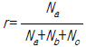
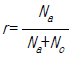
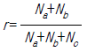
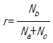
(정답률: 40%)
19. 수직 꼬리날개와 방향안정의 관계에 대하여 설명한 내용 중 가장 올바른 것은?
- 수직 꼬리날개 면적의 증가는 항력의 증가를 수반하므로 매우 작은 값으로 제한하도록 하고, 그대신 주 날개의 면적을 증가시키도록 해야 한다.
- 마하수가 큰 초음속 비행기에서는 수직 꼬리날개에 의한 안정성이 증가한다.
- 큰 마하수에서 충분한 방향 안정성을 가지기 위해서, 초음속기의 경우 상대적으로 작은 수직 꼬리날개를 가진다.
- 정적 방향안정에 미치는 수직 꼬리날개의 영향은 수직 꼬리날개 양력 변화와 모멘트 팔 길이에 의존한다.
(정답률: 56%)
20. 음속에 가까운 속도로 비행시 속도를 증가시킬수록 기수가 오히려 내려가는 경향이 생겨 조종간을 당겨야 하는 현상은?
- 더치롤(Duch roll)
- 내리흐름(down wash)현상
- 턱 언더(tuck under)현상
- 나선 불안정(spiral divergence)
(정답률: 83%)
2과목: 항공기관
21. 제트엔진의 연료 소비율(TSFC)의 정의로 가장 옳은 것은?
- 엔진의 단위시간당 단위추력을 내는데 소비한 연료량이다.
- 엔진이 단위거리를 비행하는데 소비한 연료량이다.
- 엔진이 단위시간 동안에 소비한 연료량이다.
- 엔진이 단위추력을 내는데 소비한 연료량이다.
(정답률: 71%)
22. 카르노 사이클(Carnot's Cycle)에서 절대온도 T1= 359K, T2 = 223K 라고 가정할 때 열효율은 얼마인가?
- 0.18
- 0.28
- 0.38
- 0.48
(정답률: 53%)
23. 가스터빈 연소실의 공기흡입구부에 있는 선회베인(SWIRLVANE)에 대해여 가장 올바르게 설명한 것은?
- 캔형 연소실에는 없다.
- 연소 영역을 길게한다.
- 일차 공기에 선회를 준다.
- 연료노즐 부근의 공기속도를 빠르게 한다.
(정답률: 67%)
24. 가스 터빈 기관의 진추력에서 연료 유량과 압력차를 무시했을 때 성립되는 식은? (단, Fn: 진추력, Wf : 연료의 유량, Wa: 흡입 공기의 유량, Vj : 배기 가스의 속도, Va: 비행 속도, Aj : 배기 노즐의 단면적, Pj: 배기 노즐에서 출구 정압, Pa : 대기 압력)
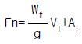
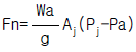
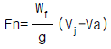
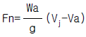
(정답률: 56%)
25. 회전하고 있는 프로펠러에 사람이 접근하게되면 치명적인 상해를 입을 수 있는데, 이를 방지하기 위한 방법으로 가장 올바른 것은?
- 블레이드 팁(Blade Tip)에 위험표식(Warning Strip)을 해준다.
- 프로펠러의 전체를 밝은 색상으로 칠해준다.
- 프로펠러의 돔(Dome)에 위험표식(Warning Strip)을 해준다.
- 블레이드의 허브(Hub)에 눈(Eye)의 모양을 그려 놓는다.
(정답률: 75%)
26. 터보제트 엔진의 통상적인 오일계통의 형(type)은?
- wet sump, spray, and splash
- wet sump, dip, and pressure
- dry sump, pressure, and spray
- dry sump, dip, and splash
(정답률: 61%)
27. 기체의 온도가 일정한 상태에서 이루어지는 상태변화를 무엇이라고 하는가?
- 등온변화
- 등압변화
- 등적변화
- 단열변화
(정답률: 87%)
28. 내부 에너지와 유동일을 합한 상태량을 무엇이라고 표현 하는가?
- 비열
- 열량
- 체적
- 엔탈피(Enthalpy)
(정답률: 73%)
29. 압축기 실속(compressor stall)이 일어나는 경우로 가장 올바른 것은?
- 항공기 속도가 압축기 rpm에 비하여 너무 작을 때
- 항공기 속도가 터빈 rpm에 비하여 너무 클 때
- Ram-air 압력이 압축기 압력에 비하여 너무 높을 때
- 항공기 속도와 압축기 압력이 같을 때
(정답률: 71%)
30. 터빈 깃의 냉각 방법 중 터빈 깃의 내부를 중공으로 제작하여 이곳으로 차가운 공기가 지나가게 함으로써 터빈 깃을 냉각시키는 방법은?
- 충돌냉각
- 공기막냉각
- 침출냉각
- 대류냉각
(정답률: 75%)
31. 마그네토에서 timing mark 를 한줄로 정렬 시켰다는 것은 무엇을 지시하는 것인가?
- E-gap 위치
- 중립위치
- breaker point가 닫혀진 위치
- 완전기록 위치
(정답률: 70%)
32. 원심식 압축기의 주요 구성품이 아닌 것은?
- 임펠러
- 디퓨저
- 고정자
- 매니폴드
(정답률: 74%)
33. 그림과 같은 단순 가스터빈 사이클의 P-V선도에서 압축기가 공기를 압축하기 위하여 소비한 일은 어느 것인가?
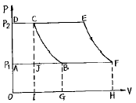
- 면적 ABCDA
- 면적 BCEFB
- 면적 OGBCDO
- 면적 AFHOA
(정답률: 68%)
34. 차압 시험기(differential pressure tester)를 이용하여 압축점검(compression check)을 수행할 때 피스톤이 하사점에 있을 때 하면 안되는 가장 큰 이유는?
- 너무 위험하기 때문에
- 최소한 한개의 밸브가 열려있기 때문에
- 게이지(gage)가 손상되므로
- 실린더 체적이 최대가 되어 부정확하므로
(정답률: 79%)
35. 실린더의 내벽을 경화(hardening) 시키는 방법은?
- nitriding
- shot peening
- Ni plating
- Zn plating
(정답률: 63%)
36. 밸브 오버랩(Valve overlap)의 가장 큰 장점은?
- 밸브 backlash를 방지한다.
- 가스의 역류를 일으킨다.
- 밸브를 좀더 오래 열리게 한다.
- 배기와 냉각을 돕는다.
(정답률: 71%)
37. 압력분사식 기화기에서 자동혼합가스 조절장치의 Bellow가 파열되었다면, 어떤 현상이 발생하겠는가?
- 혼합비가 보다 희박해진다.
- 낮은 고도에서 농후한 혼합비가 된다.
- 높은 고도에서 농후한 혼합비가 된다.
- 낮은 고도에서 희박한 혼합비가 된다.
(정답률: 52%)
38. SOAP(Spectrometic Oil Analysis Program)에 대한 설명 내용으로 가장 올바른 것은?
- 오일형의 카본 발생량으로 오일의 품질저하를 비교한다.
- 오일의 산성도를 측정하고 오일의 품질저하 상황을 비교한다.
- 오일중에 포함된 미량의 금속원소에 의해 오일의 품질 저하 상황을 비교한다.
- 오일중에 포함되는 미량의 금속원소에 의해 이상상태를 비교한다.
(정답률: 56%)
39. 터보 프롭엔진의 프로펠러 깃 각(Blade Angle)은 무엇에 의해 조절되는가?
- 속도 레버(Speed Lever)
- 파워 레버(Power Lever)
- 프로펠러 조종 레버(Properller Control Lever)
- 컨디션 레버(Condition Lever)
(정답률: 37%)
40. 축류식 압축기의 1단당 압력비가 1.6이고, 회전자 깃에 의한 압력 상승비가 1.3 이다. 압축기의 반동도(Φ c)를 구하면?(오류 신고가 접수된 문제입니다. 반드시 정답과 해설을 확인하시기 바랍니다.)
- Φ c= 0.2
- Φ c= 0.3
- Φ c= 0.5
- Φ c= 0.6
(정답률: 13%)
3과목: 항공기체
41. 노스 스트럿트(Nose strut)내부에 있는 센터링 캠(Centering cam)의 작동 목적을 가장 올바르게 설명한 것은?
- 착륙후에 노스 휠(Nose wheel)을 중립으로 하여준다.
- 이륙후에 노스 휠을 중립으로 하여준다.
- 내부 피스톤에 묻은 오물을 제거해 준다.
- 노스 휠 스티어링(steering)이 작동하지 않을 때 중립위치로 하여준다.
(정답률: 50%)
42. 페일세이프(fail-safe) 구조형식에 속하지 않는 것은?
- 다경로 하중(redundant) 구조
- 샌드위치(sandwich) 구조
- 이중(double) 구조
- 대치(back-up) 구조
(정답률: 88%)
43. 유효길이 16인치인 토오크 렌치(Torque wrench)와 연장공구 유효길이 4인치를 사용하여 1500인치 파운드의 토오크 값을 구하려 한다. 필요한 토오크에 해당되는 Scale Reading값 은?
- 1000[IN LBS]
- 1200[IN LBS]
- 1300[IN LBS]
- 1500[IN LBS]
(정답률: 67%)
44. 조종계통의 구성품 중에서 회전축에 대해 두개의 암(ARM)을 가지고 있어 회전운동을 직선운동으로 바꿔주는 것은?
- 토크 튜브(Torque Tube)
- 벨 크랭크(Bell Crank)
- 풀리(Pulley)
- 페어 리드(Fair Lead)
(정답률: 63%)
45. 모노코크 구조를 가장 올바르게 설명한 것은?
- 비틀림 응력은 동체 스트링거가 담당한다.
- Hydro-Press로 가공한 벌크헤드. 포머와 스킨이 Rivetting되어 있다.
- 동체 밑부분에는 압축력이 걸려 주로 스킨이 담당한다.
- 인장력은 스킨이 받는다.
(정답률: 36%)
46. SAE 4130 합금강에서 숫자 41은 무엇을 의미하는가?
- 크롬-몰리브덴 강이다.
- 크롬 강이다.
- 4%의 탄소강이다.
- 0.04%의 탄소강이다.
(정답률: 76%)
47. Hi-shear rivet를 사용하여 알루미늄 합금으로 된 구조재를 조립하려고 한다. 다음중 가장 올바른 내용은?
- 높은전단응력이 작용하는곳에 정밀공차를 두고 riveting 하여야 한다.
- 3개의 알루미늄 합금 rivet가 담당하는 응력치 보다 1개의 Hi-shear rivet의 담당하는 값이 적어야 한다.
- 금이 가는 것을 방지하기 위해 830℉ 내지 860℉로 가열사용한다.
- 그리프(grip)길이가 샹크(shunk)의 직경보다 적은 곳에 사용된다.
(정답률: 53%)
48. 다음 중 열가소성 수지는?
- 폴리에틸렌수지
- 페놀수지
- 에폭시수지
- 폴리우레탄수지
(정답률: 49%)
49. NAS 654 V 10 D 볼트에 너트를 고정시키는데 필요한 것은?
- 코터핀
- 안전 결선
- 락크 와셔
- 특수 와셔
(정답률: 70%)
50. 다음 보 중에서 부정정보는?
- 연속보
- 단순지지보
- 내다지보
- 외팔보
(정답률: 42%)
51. 변형률에 대한 설명 중 옳지 않은 것은?
- 변형률은 변화량과 본래의 치수와의 비를 말한다.
- 변형률은 탄성한계내에서 응력과는 아무런 관계가 없다.
- 변형률은 탄성한계내에서 응력과 정비례 관계에 있다.
- 변형률은 길이와 길이와의 비이므로 차원은 없다.
(정답률: 55%)
52. 항공기용 와셔에 대한 다음 설명중 틀리는 것은?
- AN960과 AN970은 Lock washer(락크와셔)로서 너트 밑에 사용한다.
- AN935와 AN936은 락크와셔로서 기계가공한 스크류나 볼트와 함께 사용한다.
- 락크와셔는 패스너와 함께 1차와 2차 구조에 사용할 수 없다.
- 표면의 결함을 막는 밑바닥에 평와셔없이 락크와셔가 재료에 직접 닿아서는 안된다.
(정답률: 36%)
53. Al의 내식성을 향상시키고 좋은 피막을 얻는 방법이 아닌 것은?
- 황산법
- 인산알콜법
- 크롬산법
- 석출경화
(정답률: 57%)
54. 한개의 리베트(rivet)로 두개의 평판을 그림과 같이 연결했다. 만약 리베트의 지름이 15mm이고, 하중 P가 500kg일때 리베트에 생기는 응력은 몇[kg/cm2]인가?
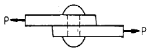
- 282.94
- 141.47
- 42.44
- 2.83
(정답률: 49%)
55. 케이블 조종계통(CABLE CONTROL SYSTEM)의 턴버클 바렐(TURNBUCKLE BARREL)에 구멍이 있다. 이 구멍의 용도를 가장 올바르게 표현한 것은?
- 양쪽 CABLE FITTING의 나사가 충분히 물려있는지 확인하기 위하여
- 양쪽 CABLE FITTING에 윤활유를 보급하기 위하여
- 안전선(SAFETY WIRE)을 하기 위하여
- TURN BUCKLE를 조절하기 위하여
(정답률: 40%)
56. 어떤 항공기의 무게를 측정한 결과 다음 도표와 같다. 이때 중심위치는 MAC의 몇%에 위치하는가?
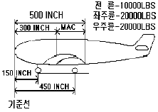
- MAC의 앞전부터 45%뒤에 위치한다.
- MAC의 앞전부터 45%앞에 위치한다.
- MAC의 앞전부터 25%뒤에 위치한다.
- MAC의 앞전부터 25%앞에 위치한다.
(정답률: 34%)
57. 서로 다른 금속이 접촉하면 접촉전기와 수분에 의해 전기가 발생하여 부식을 초래하게 되는 현상은?
- Anti-Corrosion
- Galvanic Action
- Bonding
- Age Hardening
(정답률: 73%)
58. 모재의 용접에 쓰이는 Joint의 형식이 아닌 것은?
- Butt Joint
- Tee Joint
- Double Joint
- Lap Joint
(정답률: 67%)
59. 조종계통의 구조작동에 대한 설명 내용으로 가장 올바른 것은?
- 항공기를 옆놀이 시키는데는 방향키를 사용하고, 조종은 페달로 한다.
- 선회회전 반지름으로부터 바깥쪽으로 미끄러져 나가는 것을 스킷(skid)현상이라 한다.
- 항공기를 왼쪽으로 빗놀이 시키려면 오른쪽으로 방향키를 변위시켜야 한다.
- 조종간에 힘을 주어 오른쪽으로 젖히면 항공기는 왼쪽으로 옆놀이 한다.
(정답률: 69%)
60. 그림과 같은 web 양단에 연결된 두 flange 보 구조에 전단력 V가 그림과 같이 작용하는 경우에 있어서 web에 작용하는 전단흐름 q는 얼마인가? (단, web는 굽힘하중에 대해서 저항하지 못한다.)
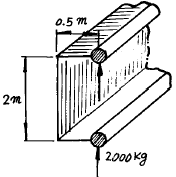
- 1,000 kg/m
- 2,000 kg/m
- 3,000 kg/m
- 4,000 kg/m
(정답률: 39%)
4과목: 항공장비
61. 조종실에서 교신하는 통신 및 대화 내용, 엔진등 백 그라운드 노이즈(Back Ground Noise)가 기록되는 장치는?
- 비행기록 장치(FDR)
- 음성기록 장치(CVR)
- 음성관리 장치(OMU)
- 플라이트 인터폰
(정답률: 78%)
62. 어떤 교류 발전기의 정격이 115V, 1kVA, 역율(Powerfactor)0.866 이라면 무효전력은 얼마인가?
- 450Var
- 500Var
- 750Var
- 1000Var
(정답률: 51%)
63. 교류전동기에 대한 설명중 옳지 않은 것은?
- 자장발생, 전기자 유도에 의한 회전력의 발생은 직류 전동기와 다르다.
- 교류전동기는 자장의 방향과 크기가 시간에 따라 변한다.
- 교류전동기는 직류전동기 보다 효율이 크다.
- 무게에 비해 많은 동력을 얻을 수 있다.
(정답률: 43%)
64. 스켈치(squelch)는 무엇인가?
- AM송신기에서 고역을 강조하는 장치
- FM송신기에서 주파수 체배를 위한 장치
- FM 수신기 신호가 없을 때 잡음을 지울수 있는 장치
- AM 수신기에서 반송파를 제거시키는 장치
(정답률: 78%)
65. 그림과 같은 회로에서 5[Ω ]에 흐르는 전류 I2를 구하면?
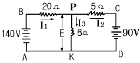
- 4A
- 6A
- 8A
- 10A
(정답률: 59%)
66. 객실 차압을 조절하기 위한 방법으로 가장 올바른 것은?
- 객실내의 공기를 배출
- 밸브로 가는 압력을 조절
- 공급원의 공기압을 조절
- 객실내의 공기를 공급
(정답률: 56%)
67. 지상에서 항공기의 연료 level을 측정할 때 사용하는 것은?
- De electoric cell
- float 기구
- Dip Stick
- Patassium
(정답률: 74%)
68. 수평상태지시기(HSI)의 전방향표지편이(VOR DEVIATION)의 1 눈금(DOT) 편위 각도는?
- 2도
- 5도
- 7도
- 10도
(정답률: 46%)
69. 니켈-카드뮴 축전지의 셀당 전압은?
- 1∼2V
- 1.2∼1.25V
- 2∼4V
- 3∼4V
(정답률: 81%)
70. 지자기 자력선의 방향과 수평선간의 각을 말하며 적도 부근에서는 거의 0도 이고 양극으로 갈수록 90도에 가까워지는 것을 무엇이라 하는가?
- 편각
- 복각
- 수평분력
- 수직분력
(정답률: 63%)
71. 합성유(SKYDROL HYDRAULIC FLUID)를 사용하는 계통을 세척할 때 사용하는 용액은?
- 등유(KEROSENE)
- 납사(NAPHTHA)
- 염화에틸렌(TRICHLORETHYLENE)
- 알콜(ALCOHOL)
(정답률: 51%)
72. 직류 발전기에서 잔류자기를 잃어 발전기 출력이 나오지 않을 경우 어떤 방법으로 잔류자기를 회복할 수 있는가?
- 잔류자기가 회복될 때까지 반대방향으로 회전시킨다.
- 계자권선에 직류전원을 공급한다.
- Field Coil을 교환한다.
- 잔류자기가 회복될 때까지 고속 회전시킨다.
(정답률: 72%)
73. 항공기 장비 냉각계통(EQUIPMENT COOLING SYSTEM)에 대한 설명 내용으로 가장 올바른 것은?
- 차가운 공기를 불어 넣어준다.
- 바깥공기(RAM AIR)를 사용한다.
- 압축기로 부터 압축공기가 공급된다.
- 객실내의 공기를 사용한다.
(정답률: 23%)
74. 유량 제어장치중 유압관 파손시 작동유가 누설되는 것을 방지하기 위한 장치는?
- 흐름 제한기(flow restrictor)
- 유압 퓨우즈(fuse)
- 흐름 조절기(flow regulator)
- 유압관 분리 밸브(disconnect valve)
(정답률: 76%)
75. 싱크로 전기기기에 대한 설명으로 틀린 것은?
- 회전축의 위치를 측정 또는 제어하기 위해 사용되는 특수한 회전기이다.
- 항공기에서는 콤파스 계기상에 VOR국이나 ADF국 방위를 지시하는 지시계기로서 사용되고 있다.
- 구조는 고정자측에 1차권선, 회전자측에 2차권선을 가지는 회전변압기이고, 2차측에는 정현파 교류가 발생하도록 되어있다.
- 각도검출 및 지시용으로는 2개의 싱크로 전기기기를 1조로 사용한다.
(정답률: 57%)
76. 조종실(Cockpit)온도변화에 따른 속도계 지시 보상방법 으로 가장 올바른 것은?
- 온도 보상은 필요 없다.
- Bimetal에 의해서 보상된다.
- 온도 보상표에 의해서 실시한다.
- Thermal S.W에 의해서 전기적으로 실시된다.
(정답률: 62%)
77. 유압 계통에 사용되는 릴리이프 밸브의 특성 중 압력 오버 라이드(Over Ride) 란?
- 크래킹 압력(Cracking Pressure)에서 부터 릴리이프 밸브가 닫칠 때 까지의 압력변화
- 릴리이프 밸브가 열려서 있을 때 정격유량의 압력변화
- 크래킹 압력에서 부터 정격유량이 흐를 때 까지의 압력변화
- 릴리이프 밸브가 닫쳐서 정격유량을 유지할 때 까지의 압력변화
(정답률: 42%)
78. 항공계기의 색표식 중 적색 방사선(Red radiation)은 무엇을 나타내는가?
- 최소, 최대운전 또는 운용한계
- 계속운전범위(순항범위)
- 경계 및 경고 범위
- 연료와 공기 혼합기의 Auto-lean시의 계속운전범위
(정답률: 68%)
79. 집합계기의 장점이 아닌 것은?
- 필요한 정보를 필요할 때 지시하게 할 수 있다.
- 한 개의 정보를 여러개의 화면에 나타낼 수 있다.
- 다양한 정보를 도면을 이용하여 표시할 수 있다.
- 항공기 상태를 그림, 숫자로 표시할 수 있다.
(정답률: 57%)
80. 부르동관(bourdon tube)을 사용하는 온도계는 어느 것인가?
- 바이메탈식 온도계
- 증기압식 온도계
- 열전쌍식 온도계
- 전기저항식 온도계
(정답률: 57%)